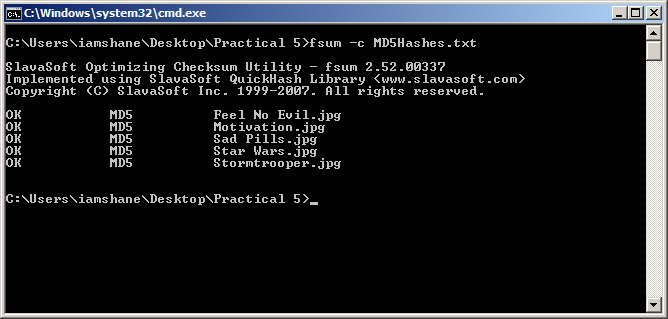
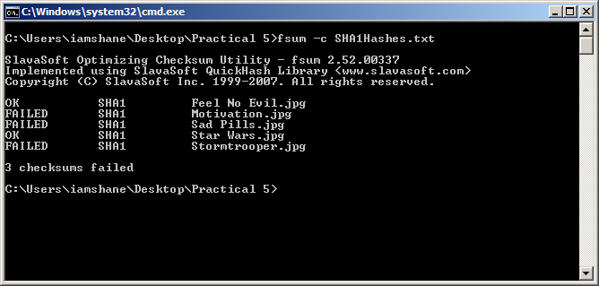
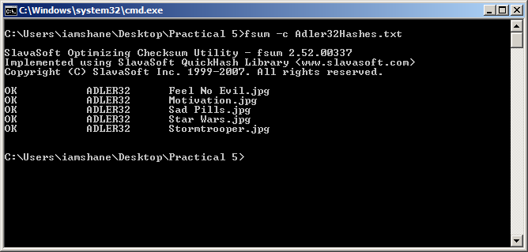

Picture
In this section I will be seeing how the three hash functions perform when generating a hash function for five JPEG images and the combined size of the images was 1.96mb. Below are the images that were used.
{kind=link}
{kind=link}
{kind=link}
{kind=link}
{kind=link}
MD-5
Firstly I was going to get the MD-5 hash values for all of the images and this can be accomplished by running the following command. fsum -md5 *.jpg>MD5Hashes and it instantly produced a 128 bit hash value for each of the images which can be seen below.
3882b510aebe020a8f1d0f9c43779f31 *Feel No Evil.jpg
48b266a7f037f07405f71885cfee329e *Motivation.jpg
6eed3027bdb0364cba919fb4245bf37e *Sad Pills.jpg
face55da1acca31ce7a944818e7a196c *Star Wars.jpg
52b3c7cced2ced53088b92cb5bdec04e *Stormtrooper.jpg
Next I wanted to verify the integrity of the hash value and to prove that it should still work as a long as the files or hash values had not changed. The screenshot below shows the command that was used and the result which was as expected.
SHA-1
Next I was going to get the SHA-1 hash values for all of the images and this can be accomplished by running the following command fsum –sha1 *.jpg>SHA1Hashes and it instantly produced a 160 bit hash value for each of the images which can be seen below.
7d5cdcdd9be54f9c9a129b8d1308bf76051216ee *Feel No Evil.jpg
5ade2b00b2e98c9284dedde240fe97b7094d7186 *Motivation.jpg
1972f0d63f086d1fc05fa35885e9252fb25471c6 *Sad Pills.jpg
3f555378aa5079702e55071930c945c5ce4da91f *Star Wars.jpg
4fd0763468daab41950420d495f8b39aa94a19be *Stormtrooper.jpg
This time to prove that by changing either one of the hash values or one of the images would result in verification failing so I changed the hash value for several of the images and then I ran the command below.
Adler-32
Finally I was to get the Adler-32 hash values for all of the images and this can be accomplished by running the following command fsum –adler *.jpg >Adler32Hashes and it instantly produced hash value for each of the images which can be seen below.
660e4b9a *Feel No Evil.jpg
3f2184ec *Motivation.jpg
bca85ad2 *Sad Pills.jpg
238f43e9 *Star Wars.jpg
a66e094f *Stormtrooper.jpg
Next I wanted to verify the integrity of the hash value and to prove that it should still work as a long as the files or hash values had not changed. The screenshot below shows the command that was used and the result which was as expected.
Hash Value Files
Reference
All the information used in this website has been sourced from the following locations:
An Illustrated Guide to Cryptographic Hashes. 2011. An Illustrated Guide to Cryptographic Hashes. [ONLINE] Available at: http://unixwiz.net/techtips/iguide-crypto-hashes.html. [Accessed 24 November 2011].
Bruce Schneier, 1995. Applied Cryptography: Protocols, Algorithms, and Source Code in C, 2nd Edition. 2 Edition. Wiley.